filter_low_k <- function(dat, V, moderator, min_k = 5) {
moderator <- rlang::ensym(moderator)
k_counts <- dat %>%
dplyr::count(!!moderator, name = "k_es")
keep_levels <- k_counts %>% dplyr::filter(k_es >= min_k) %>% dplyr::pull(!!moderator)
dat_f <- dat %>% dplyr::filter((!!moderator) %in% keep_levels)
idx <- which(dat[[rlang::as_string(moderator)]] %in% keep_levels)
V_f <- V[idx, idx]
list(data = dat_f, V = V_f, keep = keep_levels, k = k_counts)
}Uni-moderators
Note
Variable definitions:
| Variable Name | Definition |
|---|---|
ES_ID |
Unique row identifier for each \(\text{lnRR}\) effect size. |
Study_ID |
Identifier for the primary research paper. |
Cohort_ID |
Identifier for specific experimental groups within a study. |
Outcome_type |
The behavioral construct measured. Levels: Anxiety, Depression, both, unclear. |
Lifestage_exposure |
Animal’s developmental stage during music exposure. Levels: Adolescent, Juvenile, Young adult, Adult, Mixed, Unclear. |
Sex |
Sex of the subjects. Levels: Male, Female. |
Strain |
Specific animal strain or species used. |
Meta_genre |
Categorization of the music stimulus. Levels: Western Art Music / Orchestral, Popular Contemporary Music, Traditional Music / Folk / World, Mixed, Unclear. |
Music_exposure_duration |
Total time subjects were exposed to music. Levels: Acute, short, medium, long. |
Experimental_design |
Study’s methodological setup. Levels: Posttest-Only Control Group, Randomized Block, Factorial, Repeated Measures. |
Induced behavior |
Whether the tested behavior was innate or experimentally induced. |
Relative_timing |
When music was administered relative to the behavioral test. Levels: before, concurrent, both, not specified. |
Experimental_procedures |
Identifies non-treatment controls for interventions. Levels: sham, none. |
Control_condition |
Description of the control group condition. Levels: white noise, ambient noise |
Assay_type |
Type of behavioral test used. |
Overall_rob |
Overall risk of bias assessment for each study. Levels: 2 (low), 1 (moderate), 0 (high). |
Meta-regressions
NoteData Filtering & Matrix Alignment
We exclude moderator levels with fewer than five effect sizes (k < 5) to avoid unstable estimates and misleading contrasts.
Each section below fits a separate uni-moderator meta-regression. These models test whether the mean lnRR differs across levels of a single moderator while maintaining the same random-effects structure and the same dependence assumptions (VCV matrix). Because these are uni-moderator models, results describe conditional differences across that moderator only and should not be interpreted as causal effects or independent contributions to heterogeneity.
f <- filter_low_k(db, VCV, Outcome_type, min_k = 5)
db_filtered <- f$data
VCV_filtered <- f$VmOT <- rma.mv(yi = lnRR,
V = VCV_filtered,
mods = ~ Outcome_type,
random = list(~1 | Study_ID,
~1 | ES_ID,
~1 | Strain),
test = "t",
method = "REML",
sparse = TRUE,
data = db_filtered)
summary(mOT)
Multivariate Meta-Analysis Model (k = 295; method: REML)
logLik Deviance AIC BIC AICc
-235.8844 471.7687 481.7687 500.1696 481.9778
Variance Components:
estim sqrt nlvls fixed factor
sigma^2.1 0.0552 0.2349 20 no Study_ID
sigma^2.2 0.1983 0.4453 295 no ES_ID
sigma^2.3 0.0000 0.0000 6 no Strain
Test for Residual Heterogeneity:
QE(df = 293) = 5759.9439, p-val < .0001
Test of Moderators (coefficient 2):
F(df1 = 1, df2 = 293) = 0.3121, p-val = 0.5768
Model Results:
estimate se tval df pval ci.lb
intrcpt -0.1739 0.0700 -2.4860 293 0.0135 -0.3116
Outcome_typeDepression -0.0480 0.0859 -0.5587 293 0.5768 -0.2171
ci.ub
intrcpt -0.0362 *
Outcome_typeDepression 0.1211
---
Signif. codes: 0 '***' 0.001 '**' 0.01 '*' 0.05 '.' 0.1 ' ' 1r2OT <- round(r2_ml(mOT), 4)
r2OT R2_marginal R2_conditional
0.0015 0.2189 orchard_outcome<-orchard_plot(mOT,legend.pos = "top.left",
mod = "Outcome_type",
group = "Study_ID",
xlab = "lnRR",
flip = T,trunk.size = 0.3,
branch.size = 2,alpha=0.3) +
scale_colour_brewer(palette = "Set1") +
scale_fill_brewer(palette = "Dark2")+scale_y_continuous(limits = c(-8,10.5),breaks = seq(-8, 10, by = 2),
minor_breaks = seq(-8, 10, by = 1 ))+ theme(legend.direction = "vertical")
orchard_outcome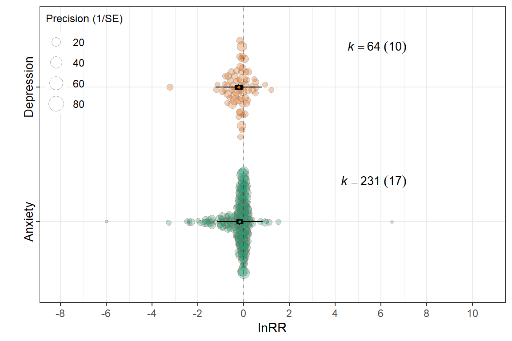
mLE <- rma.mv(yi = lnRR,
V = VCV,
mods = ~ Lifestage_exposure-1,
random = list(~1 | Study_ID,
~1 | ES_ID,
~1 | Strain),
test = "t",
method = "REML",
sparse = TRUE,
data = db)
summary(mLE)
Multivariate Meta-Analysis Model (k = 298; method: REML)
logLik Deviance AIC BIC AICc
-232.6070 465.2141 483.2141 516.3049 483.8524
Variance Components:
estim sqrt nlvls fixed factor
sigma^2.1 0.0430 0.2074 20 no Study_ID
sigma^2.2 0.1988 0.4459 298 no ES_ID
sigma^2.3 0.0013 0.0358 6 no Strain
Test for Residual Heterogeneity:
QE(df = 292) = 5862.1525, p-val < .0001
Test of Moderators (coefficients 1:6):
F(df1 = 6, df2 = 292) = 2.2267, p-val = 0.0407
Model Results:
estimate se tval df pval ci.lb
Lifestage_exposureAdolescent -0.1836 0.1531 -1.1994 292 0.2314 -0.4849
Lifestage_exposureAdult -0.1368 0.1294 -1.0566 292 0.2916 -0.3915
Lifestage_exposureJuvenile -0.1537 0.1809 -0.8497 292 0.3962 -0.5097
Lifestage_exposureMixed -0.0230 0.1098 -0.2093 292 0.8344 -0.2391
Lifestage_exposureUnclear -0.3178 0.1567 -2.0275 292 0.0435 -0.6262
Lifestage_exposureYoung adult -0.3099 0.0859 -3.6092 292 0.0004 -0.4788
ci.ub
Lifestage_exposureAdolescent 0.1177
Lifestage_exposureAdult 0.1180
Lifestage_exposureJuvenile 0.2023
Lifestage_exposureMixed 0.1931
Lifestage_exposureUnclear -0.0093 *
Lifestage_exposureYoung adult -0.1409 ***
---
Signif. codes: 0 '***' 0.001 '**' 0.01 '*' 0.05 '.' 0.1 ' ' 1r2LE <- round(r2_ml(mLE), 4)
r2LE R2_marginal R2_conditional
0.0564 0.2283 summary(glht(mLE, linfct=cbind(contrMat(rep(1,6), type="Tukey"))), test=adjusted("none"))
Simultaneous Tests for General Linear Hypotheses
Fit: rma.mv(yi = lnRR, V = VCV, mods = ~Lifestage_exposure - 1, data = db,
random = list(~1 | Study_ID, ~1 | ES_ID, ~1 | Strain), method = "REML",
test = "t", sparse = TRUE)
Linear Hypotheses:
Estimate Std. Error z value Pr(>|z|)
2 - 1 == 0 0.046841 0.169429 0.276 0.782
3 - 1 == 0 0.029899 0.193157 0.155 0.877
4 - 1 == 0 0.160634 0.187043 0.859 0.390
5 - 1 == 0 -0.134163 0.206543 -0.650 0.516
6 - 1 == 0 -0.126239 0.157411 -0.802 0.423
3 - 2 == 0 -0.016942 0.186443 -0.091 0.928
4 - 2 == 0 0.113793 0.167635 0.679 0.497
5 - 2 == 0 -0.181004 0.192528 -0.940 0.347
6 - 2 == 0 -0.173079 0.139016 -1.245 0.213
4 - 3 == 0 0.130735 0.210098 0.622 0.534
5 - 3 == 0 -0.164062 0.224887 -0.730 0.466
6 - 3 == 0 -0.156137 0.180321 -0.866 0.387
5 - 4 == 0 -0.294797 0.190160 -1.550 0.121
6 - 4 == 0 -0.286872 0.137506 -2.086 0.037 *
6 - 5 == 0 0.007925 0.137389 0.058 0.954
---
Signif. codes: 0 '***' 0.001 '**' 0.01 '*' 0.05 '.' 0.1 ' ' 1
(Adjusted p values reported -- none method)lifestage_labels <- c(
"Adolescent" = "Adol.",
"Adult" = "Adult",
"Juvenile" = "Juv.",
"Young adult" = "Y. adult",
"Mixed" = "Mixed",
"Unclear" = "Unclear"
)
orchard_lifestage<-orchard_plot(mLE,legend.pos = "top.left",
mod = "Lifestage_exposure",
group = "Study_ID",
xlab = expression(lnRR),trunk.size = 0.3,
branch.size = 2,alpha=0.3 ,
flip = T) +
scale_x_discrete(labels = lifestage_labels)+
scale_colour_brewer(palette = "Set1") +
scale_fill_brewer(palette = "Dark2")+scale_y_continuous(limits = c(-8,10.5),breaks = seq(-8, 10, by = 2),
minor_breaks = seq(-8, 10, by = 1 ))+ theme(legend.direction = "vertical")
orchard_lifestage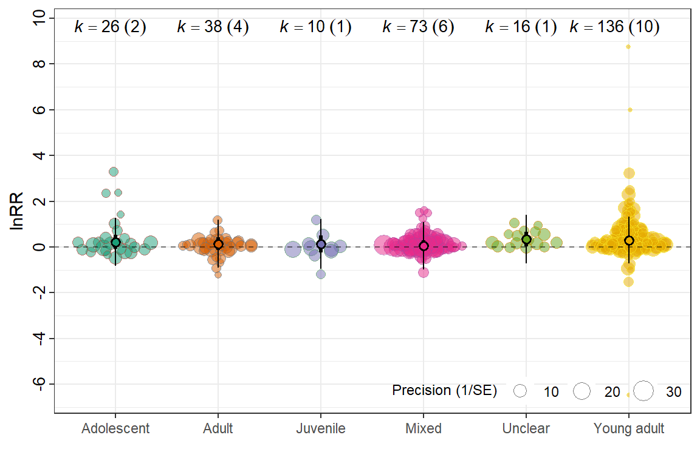
f <- filter_low_k(db, VCV, Sex, min_k = 5)
db_filtered <- f$data
VCV_filtered <- f$VmSX <- rma.mv(yi = lnRR,
V = VCV_filtered,
mods = ~ Sex,
random = list(~1 | Study_ID,
~1 | ES_ID,
~1 | Strain),
test = "t",
method = "REML",
sparse = TRUE,
data = db_filtered)
summary(mSX)
Multivariate Meta-Analysis Model (k = 295; method: REML)
logLik Deviance AIC BIC AICc
-234.9688 469.9377 479.9377 498.3385 480.1467
Variance Components:
estim sqrt nlvls fixed factor
sigma^2.1 0.0552 0.2350 19 no Study_ID
sigma^2.2 0.1978 0.4448 295 no ES_ID
sigma^2.3 0.0016 0.0406 6 no Strain
Test for Residual Heterogeneity:
QE(df = 293) = 5860.1329, p-val < .0001
Test of Moderators (coefficient 2):
F(df1 = 1, df2 = 293) = 0.2927, p-val = 0.5889
Model Results:
estimate se tval df pval ci.lb ci.ub
intrcpt -0.2273 0.0934 -2.4336 293 0.0155 -0.4111 -0.0435 *
SexMale 0.0472 0.0873 0.5410 293 0.5889 -0.1246 0.2191
---
Signif. codes: 0 '***' 0.001 '**' 0.01 '*' 0.05 '.' 0.1 ' ' 1r2SX <- round(r2_ml(mSX), 4)
r2SX R2_marginal R2_conditional
0.0021 0.2249 orchard_sex<-orchard_plot(mSX,
mod = "Sex",legend.pos = "top.left",
group = "Study_ID",
xlab = "lnRR",
flip = T,trunk.size = 0.3,
branch.size = 2,alpha=0.3) +
scale_colour_brewer(palette = "Set1") +
scale_fill_brewer(palette = "Dark2")+scale_y_continuous(limits = c(-8,10.5),breaks = seq(-8, 10, by = 2),
minor_breaks = seq(-8, 10, by = 1 ))+ theme(legend.direction = "vertical")
orchard_sex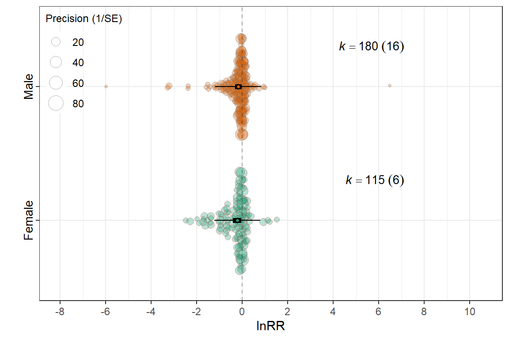
Meta_genre
mMG <- rma.mv(yi = lnRR,
V = VCV,
mods = ~ Meta_genre-1,
random = list(~1 | Study_ID,
~1 | ES_ID,
~1 | Strain),
test = "t",
method = "REML",
sparse = TRUE,
data = db)
summary(mMG)
Multivariate Meta-Analysis Model (k = 298; method: REML)
logLik Deviance AIC BIC AICc
-233.9187 467.8374 481.8374 507.6224 482.2290
Variance Components:
estim sqrt nlvls fixed factor
sigma^2.1 0.0559 0.2364 20 no Study_ID
sigma^2.2 0.1958 0.4424 298 no ES_ID
sigma^2.3 0.0000 0.0000 6 no Strain
Test for Residual Heterogeneity:
QE(df = 294) = 5767.6385, p-val < .0001
Test of Moderators (coefficients 1:4):
F(df1 = 4, df2 = 294) = 2.7174, p-val = 0.0300
Model Results:
estimate se tval df
Meta_genreMixed -0.2256 0.1454 -1.5513 294
Meta_genrePopular Contemporary Music -0.0728 0.1863 -0.3906 294
Meta_genreTraditional Music / Folk / World -0.5716 0.2610 -2.1902 294
Meta_genreWestern Art Music / Orchestral -0.1590 0.0756 -2.1040 294
pval ci.lb ci.ub
Meta_genreMixed 0.1219 -0.5118 0.0606
Meta_genrePopular Contemporary Music 0.6964 -0.4395 0.2939
Meta_genreTraditional Music / Folk / World 0.0293 -1.0852 -0.0580 *
Meta_genreWestern Art Music / Orchestral 0.0362 -0.3077 -0.0103 *
---
Signif. codes: 0 '***' 0.001 '**' 0.01 '*' 0.05 '.' 0.1 ' ' 1r2MG <- round(r2_ml(mMG), 4)
r2MG R2_marginal R2_conditional
0.0272 0.2432 genre_labels <- c(
"Mixed" = "Mixed",
"Popular Contemporary Music" = "Contemporary",
"Traditional Music / Folk / World" = "World",
"Western Art Music / Orchestral" = "Orchestral"
)
orchard_genre<-orchard_plot(mMG,
mod = "Meta_genre",legend.pos = "top.left",
group = "Study_ID",
xlab = expression(lnRR),trunk.size = 0.3,
branch.size = 2,alpha=0.3,
flip = T) +scale_x_discrete(labels = genre_labels)+
scale_colour_brewer(palette = "Set1") +
scale_fill_brewer(palette = "Dark2")+scale_y_continuous(limits = c(-8,10.5),breaks = seq(-8, 10, by = 2),
minor_breaks = seq(-8, 10, by = 1 ))+ theme(legend.direction = "vertical")
orchard_genre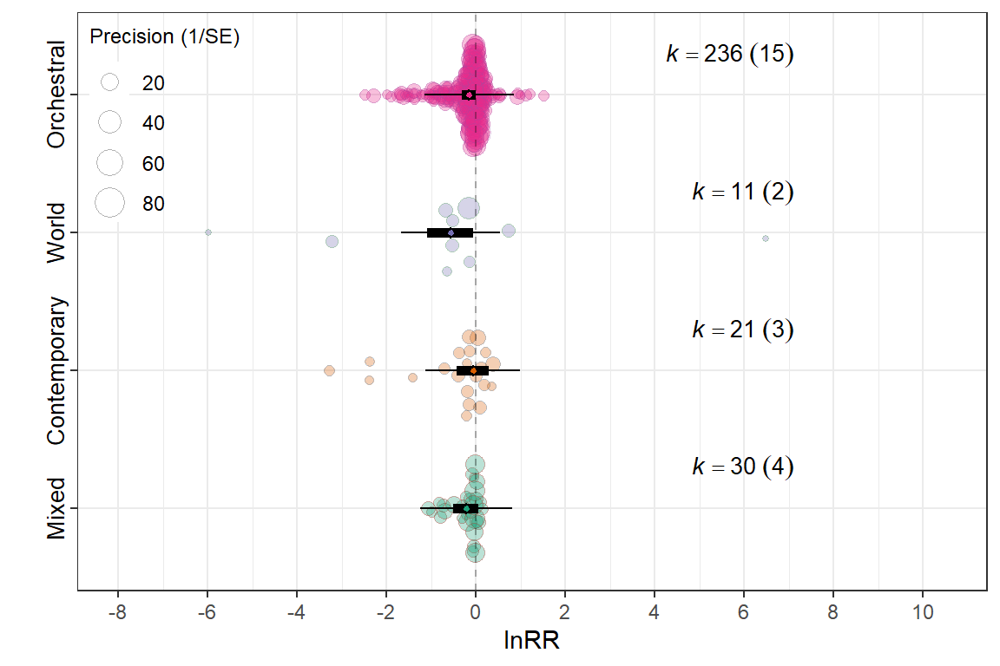
Contrasts between levels
summary(glht(mMG, linfct=cbind(contrMat(rep(1,4), type="Tukey"))), test=adjusted("none"))
Simultaneous Tests for General Linear Hypotheses
Fit: rma.mv(yi = lnRR, V = VCV, mods = ~Meta_genre - 1, data = db,
random = list(~1 | Study_ID, ~1 | ES_ID, ~1 | Strain), method = "REML",
test = "t", sparse = TRUE)
Linear Hypotheses:
Estimate Std. Error z value Pr(>|z|)
2 - 1 == 0 0.15279 0.22312 0.685 0.493
3 - 1 == 0 -0.34603 0.29803 -1.161 0.246
4 - 1 == 0 0.06657 0.15738 0.423 0.672
3 - 2 == 0 -0.49882 0.31447 -1.586 0.113
4 - 2 == 0 -0.08621 0.19203 -0.449 0.653
4 - 3 == 0 0.41261 0.27023 1.527 0.127
(Adjusted p values reported -- none method)Music_exposure_duration
f <- filter_low_k(db, VCV, Music_exposure_duration, min_k = 5)
db_filtered <- f$data
VCV_filtered <- f$VmMED <- rma.mv(yi = lnRR,
V = VCV_filtered,
mods = ~ Music_exposure_duration-1,
random = list(~1 | Study_ID,
~1 | ES_ID,
~1 | Strain),
test = "t",
method = "REML",
sparse = TRUE,
data = db_filtered)
summary(mMED)
Multivariate Meta-Analysis Model (k = 297; method: REML)
logLik Deviance AIC BIC AICc
-234.7022 469.4043 481.4043 503.5058 481.6970
Variance Components:
estim sqrt nlvls fixed factor
sigma^2.1 0.0615 0.2479 20 no Study_ID
sigma^2.2 0.1976 0.4445 297 no ES_ID
sigma^2.3 0.0000 0.0000 6 no Strain
Test for Residual Heterogeneity:
QE(df = 294) = 5915.3755, p-val < .0001
Test of Moderators (coefficients 1:3):
F(df1 = 3, df2 = 294) = 2.8683, p-val = 0.0368
Model Results:
estimate se tval df pval ci.lb
Music_exposure_durationAcute -0.2237 0.1156 -1.9350 294 0.0540 -0.4512
Music_exposure_durationMedium -0.0617 0.1428 -0.4322 294 0.6659 -0.3428
Music_exposure_durationShort -0.2308 0.1068 -2.1619 294 0.0314 -0.4410
ci.ub
Music_exposure_durationAcute 0.0038 .
Music_exposure_durationMedium 0.2194
Music_exposure_durationShort -0.0207 *
---
Signif. codes: 0 '***' 0.001 '**' 0.01 '*' 0.05 '.' 0.1 ' ' 1r2MED <- round(r2_ml(mMED), 4)
r2MED R2_marginal R2_conditional
0.0167 0.2500 orchard_exposure<-orchard_plot(mMED,
mod = "Music_exposure_duration",legend.pos = "top.left",
group = "Study_ID",
xlab = expression(lnRR), trunk.size = 0.3,
branch.size = 2,alpha=0.3,
flip = T) +
scale_colour_brewer(palette = "Set1") +
scale_fill_brewer(palette = "Dark2")+scale_y_continuous(limits = c(-8,10.5),breaks = seq(-8, 10, by = 2),
minor_breaks = seq(-8, 10, by = 1 ))+ theme(legend.direction = "vertical")
orchard_exposure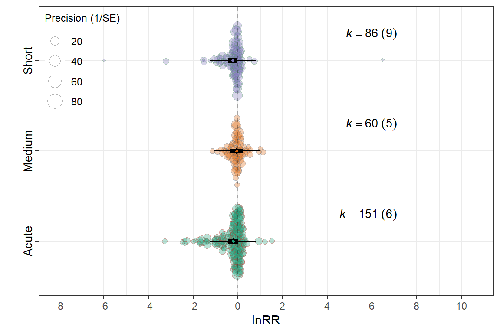
Contrasts between levels
summary(glht(mMED, linfct=cbind(contrMat(rep(1,3), type="Tukey"))), test=adjusted("none"))
Simultaneous Tests for General Linear Hypotheses
Fit: rma.mv(yi = lnRR, V = VCV_filtered, mods = ~Music_exposure_duration -
1, data = db_filtered, random = list(~1 | Study_ID, ~1 |
ES_ID, ~1 | Strain), method = "REML", test = "t", sparse = TRUE)
Linear Hypotheses:
Estimate Std. Error z value Pr(>|z|)
2 - 1 == 0 0.161969 0.183757 0.881 0.378
3 - 1 == 0 -0.007131 0.157371 -0.045 0.964
3 - 2 == 0 -0.169100 0.178329 -0.948 0.343
(Adjusted p values reported -- none method)mEXD <- rma.mv(yi = lnRR,
V = VCV,
mods = ~ Experimental_design-1,
random = list(~1 | Study_ID,
~1 | ES_ID,
~1 | Strain),
test = "t",
method = "REML",
sparse = TRUE,
data = db)
summary(mEXD)
Multivariate Meta-Analysis Model (k = 298; method: REML)
logLik Deviance AIC BIC AICc
-234.2177 468.4355 480.4355 502.5573 480.7271
Variance Components:
estim sqrt nlvls fixed factor
sigma^2.1 0.0508 0.2253 20 no Study_ID
sigma^2.2 0.1959 0.4426 298 no ES_ID
sigma^2.3 0.0000 0.0000 6 no Strain
Test for Residual Heterogeneity:
QE(df = 295) = 5774.8477, p-val < .0001
Test of Moderators (coefficients 1:3):
F(df1 = 3, df2 = 295) = 4.0246, p-val = 0.0079
Model Results:
estimate se tval df
Experimental_designFactorial -0.1557 0.0705 -2.2089 295
Experimental_designPosttest-Only Control Group -0.3391 0.1040 -3.2600 295
Experimental_designRepeated Measures -0.1494 0.1938 -0.7708 295
pval ci.lb ci.ub
Experimental_designFactorial 0.0280 -0.2944 -0.0170 *
Experimental_designPosttest-Only Control Group 0.0012 -0.5438 -0.1344 **
Experimental_designRepeated Measures 0.4415 -0.5307 0.2320
---
Signif. codes: 0 '***' 0.001 '**' 0.01 '*' 0.05 '.' 0.1 ' ' 1r2EXD <- round(r2_ml(mEXD), 4)
r2EXD R2_marginal R2_conditional
0.0199 0.2216 orchard_design<-orchard_plot(mEXD,
mod = "Experimental_design",legend.pos = "top.left",
group = "Study_ID",
xlab = expression(lnRR), trunk.size = 0.3,
branch.size = 2,alpha=0.3,
flip=T) +
scale_colour_brewer(palette = "Set1") +
scale_fill_brewer(palette = "Dark2")+scale_y_continuous(limits = c(-8,10.5),breaks = seq(-8, 10, by = 2),
minor_breaks = seq(-8, 10, by = 1 ))+ theme(legend.direction = "vertical")
orchard_design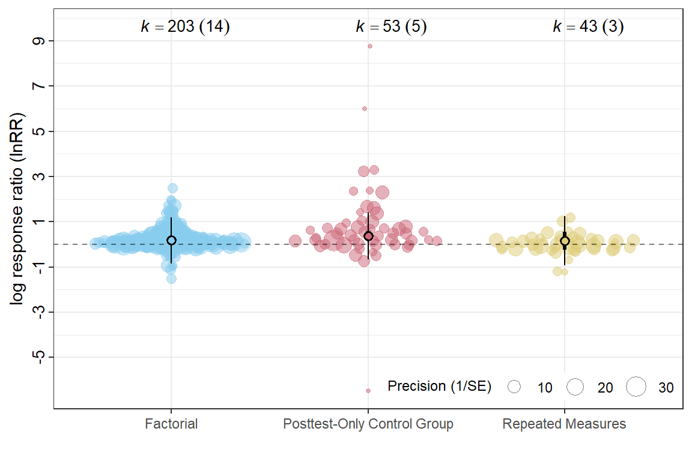
Contrasts between levels
summary(glht(mEXD, linfct=cbind(contrMat(rep(1,3), type="Tukey"))), test=adjusted("none"))
Simultaneous Tests for General Linear Hypotheses
Fit: rma.mv(yi = lnRR, V = VCV, mods = ~Experimental_design - 1, data = db,
random = list(~1 | Study_ID, ~1 | ES_ID, ~1 | Strain), method = "REML",
test = "t", sparse = TRUE)
Linear Hypotheses:
Estimate Std. Error z value Pr(>|z|)
2 - 1 == 0 -0.183417 0.098073 -1.870 0.0615 .
3 - 1 == 0 0.006323 0.206185 0.031 0.9755
3 - 2 == 0 0.189739 0.219919 0.863 0.3883
---
Signif. codes: 0 '***' 0.001 '**' 0.01 '*' 0.05 '.' 0.1 ' ' 1
(Adjusted p values reported -- none method)mIB <- rma.mv(yi = lnRR,
V = VCV,
mods = ~ `Induced behaviour`,
random = list(~1 | Study_ID,
~1 | ES_ID,
~1 | Strain),
test = "t",
method = "REML",
sparse = TRUE,
data = db)
summary(mIB)
Multivariate Meta-Analysis Model (k = 298; method: REML)
logLik Deviance AIC BIC AICc
-232.7051 465.4103 475.4103 493.8621 475.6172
Variance Components:
estim sqrt nlvls fixed factor
sigma^2.1 0.0507 0.2251 20 no Study_ID
sigma^2.2 0.1898 0.4356 298 no ES_ID
sigma^2.3 0.0000 0.0001 6 no Strain
Test for Residual Heterogeneity:
QE(df = 296) = 5583.5773, p-val < .0001
Test of Moderators (coefficient 2):
F(df1 = 1, df2 = 296) = 8.8294, p-val = 0.0032
Model Results:
estimate se tval df pval ci.lb
intrcpt -0.4232 0.1021 -4.1462 296 <.0001 -0.6240
`Induced behaviour`Innate 0.3084 0.1038 2.9714 296 0.0032 0.1042
ci.ub
intrcpt -0.2223 ***
`Induced behaviour`Innate 0.5127 **
---
Signif. codes: 0 '***' 0.001 '**' 0.01 '*' 0.05 '.' 0.1 ' ' 1r2IB <- round(r2_ml(mIB), 4)
r2IB R2_marginal R2_conditional
0.0541 0.2534 orchard_behaviour<-orchard_plot(mIB,
mod = "Induced behaviour",legend.pos = "top.left",
group = "Study_ID",
xlab = expression(lnRR), trunk.size = 0.3,
branch.size = 2,alpha=0.3,
flip = T)+
scale_colour_brewer(palette = "Set1") +
scale_fill_brewer(palette = "Dark2")+scale_y_continuous(limits = c(-8,10.5),breaks = seq(-8, 10, by = 2),
minor_breaks = seq(-8, 10, by = 1 ))+ theme(legend.direction = "vertical")
orchard_behaviour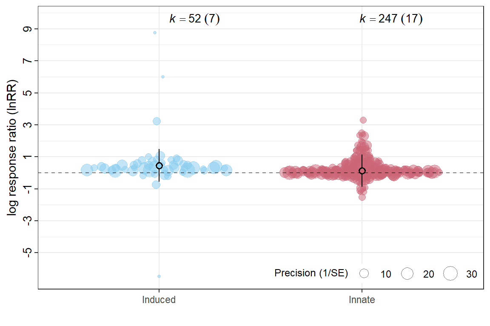
mRT <- rma.mv(yi = lnRR,
V = VCV,
mods = ~ Relative_timing-1,
random = list(~1 | Study_ID,
~1 | ES_ID,
~1 | Strain),
test = "t",
method = "REML",
sparse = TRUE,
data = db)
summary(mRT)
Multivariate Meta-Analysis Model (k = 298; method: REML)
logLik Deviance AIC BIC AICc
-233.3589 466.7178 478.7178 500.8397 479.0095
Variance Components:
estim sqrt nlvls fixed factor
sigma^2.1 0.0573 0.2393 20 no Study_ID
sigma^2.2 0.1932 0.4395 298 no ES_ID
sigma^2.3 0.0000 0.0000 6 no Strain
Test for Residual Heterogeneity:
QE(df = 295) = 5847.8662, p-val < .0001
Test of Moderators (coefficients 1:3):
F(df1 = 3, df2 = 295) = 4.5599, p-val = 0.0039
Model Results:
estimate se tval df pval ci.lb
Relative_timingBefore -0.1995 0.0724 -2.7567 295 0.0062 -0.3419
Relative_timingBoth -0.1842 0.1373 -1.3417 295 0.1807 -0.4543
Relative_timingConcurrent 0.3470 0.2331 1.4885 295 0.1377 -0.1118
ci.ub
Relative_timingBefore -0.0571 **
Relative_timingBoth 0.0860
Relative_timingConcurrent 0.8057
---
Signif. codes: 0 '***' 0.001 '**' 0.01 '*' 0.05 '.' 0.1 ' ' 1r2RT <- round(r2_ml(mRT), 4)
r2RT R2_marginal R2_conditional
0.0229 0.2463 orchard_timing<-orchard_plot(mRT,
mod = "Relative_timing",legend.pos = "top.left",
group = "Study_ID",
xlab = expression(lnRR),trunk.size = 0.3,
branch.size = 2,alpha=0.3) +
scale_colour_brewer(palette = "Set1") +
scale_fill_brewer(palette = "Dark2")+scale_y_continuous(limits = c(-8,10.5),breaks = seq(-8, 10, by = 2),
minor_breaks = seq(-8, 10, by = 1 ))+ theme(legend.direction = "vertical")
orchard_timing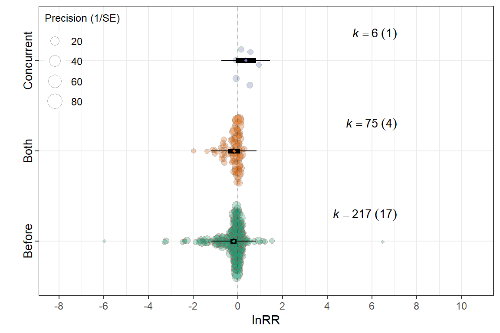
summary(glht(mRT, linfct=cbind(contrMat(rep(1,3), type="Tukey"))), test=adjusted("none"))
Simultaneous Tests for General Linear Hypotheses
Fit: rma.mv(yi = lnRR, V = VCV, mods = ~Relative_timing - 1, data = db,
random = list(~1 | Study_ID, ~1 | ES_ID, ~1 | Strain), method = "REML",
test = "t", sparse = TRUE)
Linear Hypotheses:
Estimate Std. Error z value Pr(>|z|)
2 - 1 == 0 0.0153 0.1480 0.103 0.9177
3 - 1 == 0 0.5464 0.2335 2.340 0.0193 *
3 - 2 == 0 0.5311 0.2394 2.219 0.0265 *
---
Signif. codes: 0 '***' 0.001 '**' 0.01 '*' 0.05 '.' 0.1 ' ' 1
(Adjusted p values reported -- none method)mEXP <- rma.mv(yi = lnRR,
V = VCV,
mods = ~ Experimental_procedures,
random = list(~1 | Study_ID,
~1 | ES_ID,
~1 | Strain),
test = "t",
method = "REML",
sparse = TRUE,
data = db)
summary(mEXP)
Multivariate Meta-Analysis Model (k = 298; method: REML)
logLik Deviance AIC BIC AICc
-236.6674 473.3348 483.3348 501.7866 483.5417
Variance Components:
estim sqrt nlvls fixed factor
sigma^2.1 0.0607 0.2465 20 no Study_ID
sigma^2.2 0.1953 0.4419 298 no ES_ID
sigma^2.3 0.0000 0.0000 6 no Strain
Test for Residual Heterogeneity:
QE(df = 296) = 5830.8782, p-val < .0001
Test of Moderators (coefficient 2):
F(df1 = 1, df2 = 296) = 0.6846, p-val = 0.4087
Model Results:
estimate se tval df pval ci.lb
intrcpt -0.1978 0.0692 -2.8582 296 0.0046 -0.3340
Experimental_proceduresSham 0.0852 0.1030 0.8274 296 0.4087 -0.1174
ci.ub
intrcpt -0.0616 **
Experimental_proceduresSham 0.2878
---
Signif. codes: 0 '***' 0.001 '**' 0.01 '*' 0.05 '.' 0.1 ' ' 1r2EXP <- round(r2_ml(mEXP), 4)
r2EXP R2_marginal R2_conditional
0.0046 0.2407 orchard_exp<-orchard_plot(mEXP,
mod = "Experimental_procedures",legend.pos = "top.left",
group = "Study_ID",
xlab = expression(lnRR),trunk.size = 0.3,
branch.size = 2,alpha=0.3) +
scale_colour_brewer(palette = "Set1") +
scale_fill_brewer(palette = "Dark2")+scale_y_continuous(limits = c(-8,10.5),breaks = seq(-8, 10, by = 2),
minor_breaks = seq(-8, 10, by = 1 ))+ theme(legend.direction = "vertical")
orchard_exp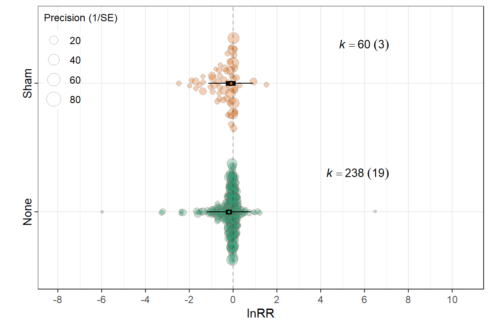
mCC <- rma.mv(yi = lnRR,
V = VCV,
mods = ~ Control_conditions,
random = list(~1 | Study_ID,
~1 | ES_ID,
~1 | Strain),
test = "t",
method = "REML",
sparse = TRUE,
data = db)
summary(mCC)
Multivariate Meta-Analysis Model (k = 298; method: REML)
logLik Deviance AIC BIC AICc
-234.0318 468.0636 478.0636 496.5154 478.2705
Variance Components:
estim sqrt nlvls fixed factor
sigma^2.1 0.0539 0.2322 20 no Study_ID
sigma^2.2 0.1924 0.4386 298 no ES_ID
sigma^2.3 0.0000 0.0000 6 no Strain
Test for Residual Heterogeneity:
QE(df = 296) = 5858.5127, p-val < .0001
Test of Moderators (coefficient 2):
F(df1 = 1, df2 = 296) = 6.3671, p-val = 0.0121
Model Results:
estimate se tval df pval ci.lb
intrcpt -0.1614 0.0659 -2.4469 296 0.0150 -0.2911
Control_conditionswhite noise -0.2382 0.0944 -2.5233 296 0.0121 -0.4241
ci.ub
intrcpt -0.0316 *
Control_conditionswhite noise -0.0524 *
---
Signif. codes: 0 '***' 0.001 '**' 0.01 '*' 0.05 '.' 0.1 ' ' 1r2CC <- round(r2_ml(mCC), 4)
r2CC R2_marginal R2_conditional
0.0288 0.2414 control_labels <- c(
"ambiet sound" = "Ambient sound",
"Ambiet sound" = "Ambient sound", # optional safeguard if both exist
"White noise" = "White noise"
)
orchard_control<-orchard_plot(mCC,
mod = "Control_conditions",legend.pos = "top.left",
group = "Study_ID",
xlab = expression(lnRR),trunk.size = 0.3,
branch.size = 2,alpha=0.3) +
scale_x_discrete(labels = control_labels) +
scale_colour_brewer(palette = "Set1") +
scale_fill_brewer(palette = "Dark2")+scale_y_continuous(limits = c(-8,10.5),breaks = seq(-8, 10, by = 2),
minor_breaks = seq(-8, 10, by = 1 ))+ theme(legend.direction = "vertical")
orchard_control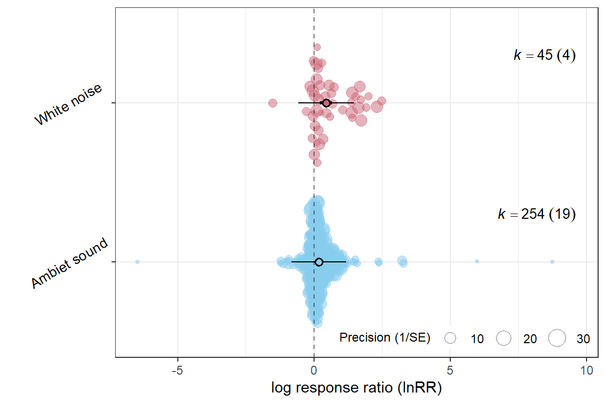
mCC <- rma.mv(yi = lnRR,
V = VCV,
mods = ~ Control_conditions,
random = list(~1 | Study_ID,
~1 | ES_ID,
~1 | Strain),
test = "t",
method = "REML",
sparse = TRUE,
data = db)
summary(mCC)
Multivariate Meta-Analysis Model (k = 298; method: REML)
logLik Deviance AIC BIC AICc
-234.0318 468.0636 478.0636 496.5154 478.2705
Variance Components:
estim sqrt nlvls fixed factor
sigma^2.1 0.0539 0.2322 20 no Study_ID
sigma^2.2 0.1924 0.4386 298 no ES_ID
sigma^2.3 0.0000 0.0000 6 no Strain
Test for Residual Heterogeneity:
QE(df = 296) = 5858.5127, p-val < .0001
Test of Moderators (coefficient 2):
F(df1 = 1, df2 = 296) = 6.3671, p-val = 0.0121
Model Results:
estimate se tval df pval ci.lb
intrcpt -0.1614 0.0659 -2.4469 296 0.0150 -0.2911
Control_conditionswhite noise -0.2382 0.0944 -2.5233 296 0.0121 -0.4241
ci.ub
intrcpt -0.0316 *
Control_conditionswhite noise -0.0524 *
---
Signif. codes: 0 '***' 0.001 '**' 0.01 '*' 0.05 '.' 0.1 ' ' 1f <- filter_low_k(db, VCV,Assay_type, min_k = 5)
db_filtered <- f$data
VCV_filtered <- f$VmAT <- rma.mv(yi = lnRR,
V = VCV_filtered,
mods = ~ Assay_type-1,
random = list(~1 | Study_ID,
~1 | ES_ID,
~1 | Strain),
test = "t",
method = "REML",
sparse = TRUE,
data = db_filtered)
summary(mAT)
Multivariate Meta-Analysis Model (k = 289; method: REML)
logLik Deviance AIC BIC AICc
-222.9398 445.8796 463.8796 496.6886 464.5389
Variance Components:
estim sqrt nlvls fixed factor
sigma^2.1 0.0400 0.2000 20 no Study_ID
sigma^2.2 0.1939 0.4403 289 no ES_ID
sigma^2.3 0.0017 0.0409 6 no Strain
Test for Residual Heterogeneity:
QE(df = 283) = 5545.5776, p-val < .0001
Test of Moderators (coefficients 1:6):
F(df1 = 6, df2 = 283) = 3.3229, p-val = 0.0035
Model Results:
estimate se tval df pval
Assay_typeElevated Plus Maze -0.2307 0.0759 -3.0376 283 0.0026
Assay_typeForced Swim Test (FST) -0.3110 0.1083 -2.8721 283 0.0044
Assay_typeLight-Dark Box -0.4957 0.1443 -3.4366 283 0.0007
Assay_typeOpen Field Test -0.0586 0.0792 -0.7389 283 0.4606
Assay_typeSucrose Preference Test (SPT) -0.1672 0.1495 -1.1183 283 0.2644
Assay_typeTail Suspension Test (TST) -0.0955 0.1917 -0.4983 283 0.6186
ci.lb ci.ub
Assay_typeElevated Plus Maze -0.3802 -0.0812 **
Assay_typeForced Swim Test (FST) -0.5241 -0.0979 **
Assay_typeLight-Dark Box -0.7797 -0.2118 ***
Assay_typeOpen Field Test -0.2145 0.0974
Assay_typeSucrose Preference Test (SPT) -0.4615 0.1271
Assay_typeTail Suspension Test (TST) -0.4729 0.2818
---
Signif. codes: 0 '***' 0.001 '**' 0.01 '*' 0.05 '.' 0.1 ' ' 1r2AT <- round(r2_ml(mAT), 4)
r2AT R2_marginal R2_conditional
0.0602 0.2264 assay_labels <- c(
"Elevated Plus Maze" = "EPM",
"Open Field Test" = "OFT",
"Light-Dark Box" = "LDB",
"Forced Swim Test (FST)" = "FST",
"Tail Suspension Test (TST)" = "TST",
"Sucrose Preference Test (SPT)" = "SPT"
)
orchard_assay <- orchard_plot(
mAT,legend.pos = "top.left",
mod = "Assay_type",
group = "Study_ID",
xlab = expression(lnRR),trunk.size = 0.3,
branch.size = 2, alpha = 0.3
) +
scale_colour_brewer(palette = "Set1") +
scale_fill_brewer(palette = "Dark2") +
scale_x_discrete(labels = assay_labels) +scale_y_continuous(limits = c(-8,10.5),breaks = seq(-8, 10, by = 2),
minor_breaks = seq(-8, 10, by = 1 ))+
labs(
x = NULL,
y = expression(lnRR),
subtitle = "Behavioural assay"
) +
theme(
plot.subtitle = element_text(size = 10, face = "bold"),
axis.title.y = element_text(face = "bold"),legend.direction = "vertical"
)
orchard_assay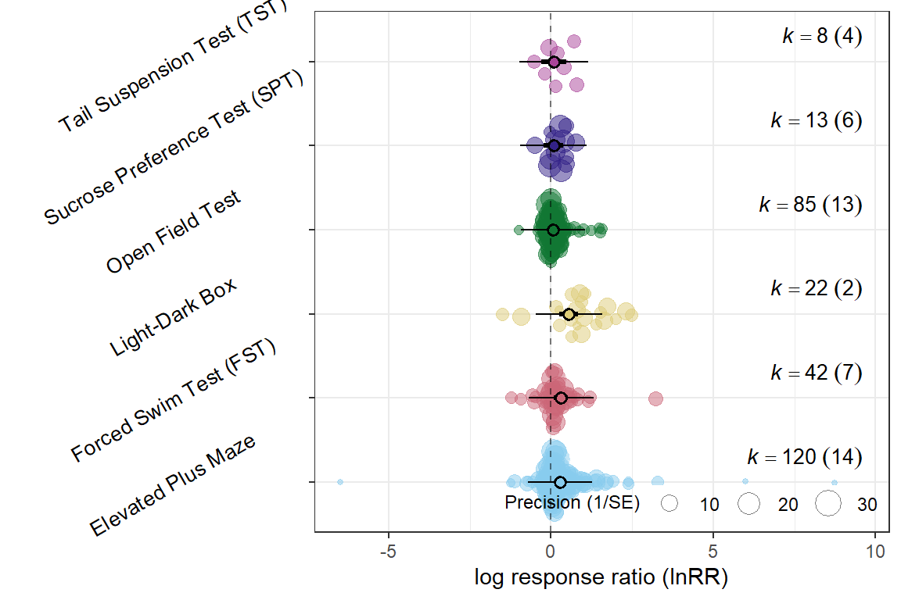
summary(glht(mAT, linfct=cbind(contrMat(rep(1,6), type="Tukey"))), test=adjusted("none"))
Simultaneous Tests for General Linear Hypotheses
Fit: rma.mv(yi = lnRR, V = VCV_filtered, mods = ~Assay_type - 1, data = db_filtered,
random = list(~1 | Study_ID, ~1 | ES_ID, ~1 | Strain), method = "REML",
test = "t", sparse = TRUE)
Linear Hypotheses:
Estimate Std. Error z value Pr(>|z|)
2 - 1 == 0 -0.08029 0.10615 -0.756 0.44944
3 - 1 == 0 -0.26502 0.12952 -2.046 0.04074 *
4 - 1 == 0 0.17216 0.07744 2.223 0.02622 *
5 - 1 == 0 0.06351 0.15524 0.409 0.68247
6 - 1 == 0 0.13517 0.19656 0.688 0.49165
3 - 2 == 0 -0.18473 0.16464 -1.122 0.26183
4 - 2 == 0 0.25244 0.11280 2.238 0.02523 *
5 - 2 == 0 0.14380 0.17002 0.846 0.39768
6 - 2 == 0 0.21546 0.21073 1.022 0.30658
4 - 3 == 0 0.43718 0.14635 2.987 0.00282 **
5 - 3 == 0 0.32853 0.19875 1.653 0.09834 .
6 - 3 == 0 0.40019 0.23239 1.722 0.08505 .
5 - 4 == 0 -0.10865 0.15476 -0.702 0.48265
6 - 4 == 0 -0.03699 0.19607 -0.189 0.85037
6 - 5 == 0 0.07166 0.23019 0.311 0.75556
---
Signif. codes: 0 '***' 0.001 '**' 0.01 '*' 0.05 '.' 0.1 ' ' 1
(Adjusted p values reported -- none method)Patched figure
orchard_assay <- orchard_assay + labs(subtitle = "Behavioral assay")
orchard_lifestage <- orchard_lifestage + labs(subtitle = "Age at exposure")
orchard_control <- orchard_control + labs(subtitle = "Control condition")
orchard_behaviour <- orchard_behaviour + labs(subtitle = "Behavioral mechanism")
# 2) Hide legends on all but ONE panel (choose bottom-right here)
orchard_assay <- orchard_assay + theme(legend.position = "none")
orchard_lifestage <- orchard_lifestage + theme(legend.position = "none")
orchard_control <- orchard_control + theme(legend.position = "none")
# orchard_behaviour keeps the legend
# 3) Patch with your layout
patched_figure <- (orchard_assay + orchard_lifestage ) /
(orchard_control + orchard_behaviour) +
plot_annotation(tag_levels = "A") &
theme(
plot.tag = element_text(size = 12, face = "bold"),
plot.subtitle = element_text(size = 10, face = "bold")
)
# 4) Enforce identical lnRR scale and a single y-axis label across ALL panels
patched_figure <- patched_figure &
scale_y_continuous(
limits = c(-8, 10),
breaks = seq(-8, 10, by = 2),
minor_breaks = seq(-8, 10, by = 1)
) &
labs(y = expression(lnRR), x = NULL)
patched_figure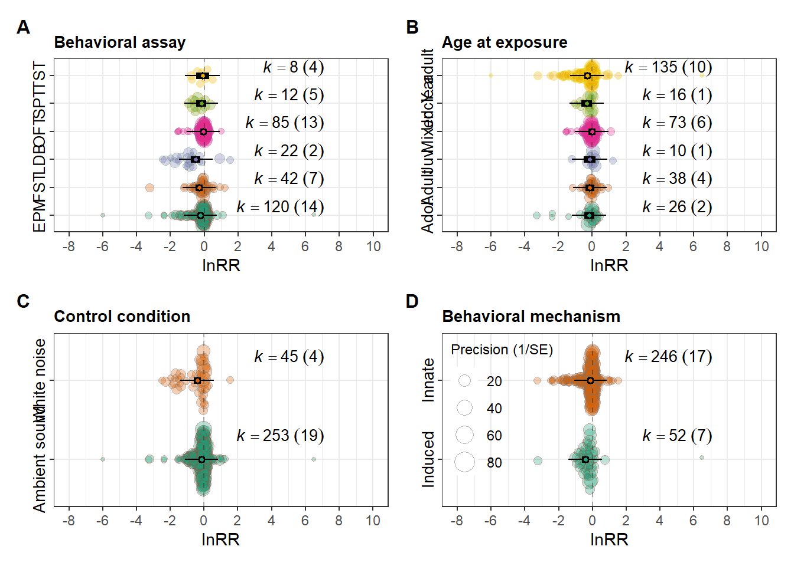
ggsave(filename = here("..","Plots", "patched_lnRR.pdf"),
plot = patched_figure,
dpi = 300, device = cairo_pdf,width = 10,
height = 10)
ggsave(filename = here("..","Plots", "patched_lnRR.jpg"),
plot = patched_figure,
width = 10,
height = 10,
dpi = 300)
Note
sessionInfo()R version 4.5.2 (2025-10-31 ucrt)
Platform: x86_64-w64-mingw32/x64
Running under: Windows 11 x64 (build 26200)
Matrix products: default
LAPACK version 3.12.1
locale:
[1] LC_COLLATE=English_Guernsey.utf8 LC_CTYPE=English_Guernsey.utf8
[3] LC_MONETARY=English_Guernsey.utf8 LC_NUMERIC=C
[5] LC_TIME=English_Guernsey.utf8
time zone: America/Edmonton
tzcode source: internal
attached base packages:
[1] stats graphics grDevices utils datasets methods base
other attached packages:
[1] multcomp_1.4-29 TH.data_1.1-5 MASS_7.3-65
[4] survival_3.8-6 mvtnorm_1.3-3 orchaRd_2.1.3
[7] metafor_4.8-0 numDeriv_2016.8-1.1 metadat_1.4-0
[10] Matrix_1.7-4 patchwork_1.3.2 lubridate_1.9.4
[13] forcats_1.0.1 stringr_1.6.0 dplyr_1.1.4
[16] purrr_1.2.1 readr_2.1.6 tidyr_1.3.2
[19] tibble_3.3.1 ggplot2_4.0.1 tidyverse_2.0.0
[22] knitr_1.51 here_1.0.2 dtplyr_1.3.2
[25] DT_0.34.0
loaded via a namespace (and not attached):
[1] beeswarm_0.4.0 gtable_0.3.6 xfun_0.56
[4] htmlwidgets_1.6.4 lattice_0.22-7 mathjaxr_2.0-0
[7] tzdb_0.5.0 vctrs_0.7.1 tools_4.5.2
[10] generics_0.1.4 parallel_4.5.2 sandwich_3.1-1
[13] pacman_0.5.1 pkgconfig_2.0.3 data.table_1.18.2.1
[16] RColorBrewer_1.1-3 S7_0.2.1 lifecycle_1.0.5
[19] compiler_4.5.2 farver_2.1.2 codetools_0.2-20
[22] vipor_0.4.7 htmltools_0.5.9 yaml_2.3.12
[25] crayon_1.5.3 pillar_1.11.1 nlme_3.1-168
[28] tidyselect_1.2.1 digest_0.6.39 stringi_1.8.7
[31] labeling_0.4.3 splines_4.5.2 latex2exp_0.9.8
[34] rprojroot_2.1.1 fastmap_1.2.0 grid_4.5.2
[37] cli_3.6.5 magrittr_2.0.4 withr_3.0.2
[40] scales_1.4.0 bit64_4.6.0-1 ggbeeswarm_0.7.3
[43] estimability_1.5.1 timechange_0.3.0 rmarkdown_2.30
[46] emmeans_2.0.1 bit_4.6.0 otel_0.2.0
[49] zoo_1.8-15 hms_1.1.4 coda_0.19-4.1
[52] evaluate_1.0.5 rlang_1.1.7 xtable_1.8-4
[55] glue_1.8.0 rstudioapi_0.18.0 vroom_1.7.0
[58] jsonlite_2.0.0 R6_2.6.1